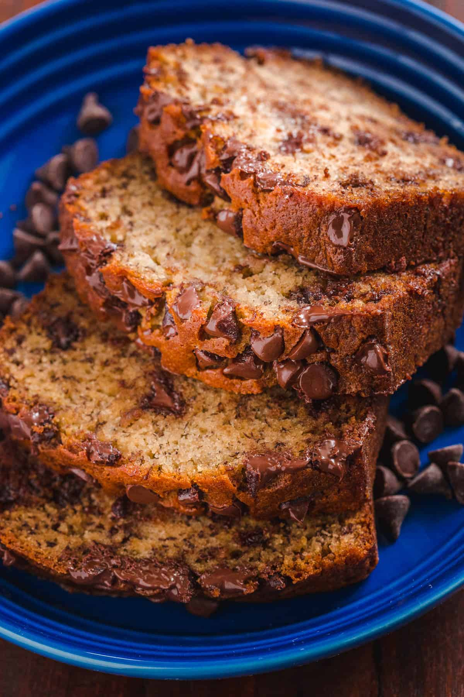

Double Chocolate Cookies
Origin: Michigan
Source: Family Recipe
Category: Desert

My daughter learned to make these cookies at a baking camp at Zingermanns and has tweaked the recipe to fit the taste buds of her siblings. They are extremely sugary so the salt helps to balance it. Note, these cookies are best eaten very quickly.
Recipe Ingredients
- a.Unsalted butter
- b.Granulated Sugar
- c.Packed light or dark brown sugar
- d.Large egg
- e.Pure vanilla extract
- f.Semi-sweet chocolate chunks (melted)
- g.All-purpose flour
- h.Natural unsweetened cocoa powder
- i.Baking soda
- j.Salt
- k.Semi-sweet chocolate chunks
Recipe Steps
- a.In a mixing bowl cream together the butter, granulated sugar, and brown sugar
- b.Add the egg and vanilla extract and beat well
- c.Add the melted chocolate
- d.In a separate bowl combine the flour, baking soda, cocoa powder and saltg
- e.Combine the wet and dry ingredients
- f.Add the unmelted chocolate chunks.
- g.Form 15 cookies and place on a baking sheet.
- h.Cooke for 12 to 13 minutes at 350 degrees.
Chocolate Chip Banana Bread
Origin: American
Source:Category: Desert
This is a tried-and-tested recipe that I have used numerous times for making the perfect chocolate chip banana bread! Not only does it help utilize the bananas that have slowly overripened at the back of the fridge, it ends up creating an incredibly delicious, and relatively healthy, dessert.
Recipe Ingredients
- a.Cooking spray
- b.2 cups (240 g) all-purpose flour
- c.1 tsp. baking soda
- d.1/2 tsp. kosher salt
- e.1 large egg plus 1 egg yolk
- f.1 cup (200 g) granulated sugar
- g.1/2 cup (1 stick) unsalted butter, melted
- h.1/4 cup sour cream
- i.1 tsp. pure vanilla extract
- j.3 ripe bananas, mashed
- k.1/2 cup chopped toasted walnuts
- l.1/2 cup semisweet chocolate chips
Recipe Steps
- a.Preheat the oven to 350º. Line a 9"-by-5" loaf pan with parchment and grease with cooking spray.
- b.In a medium bowl, whisk flour, baking soda, and salt.
- c.In a large bowl, mix egg, egg yolk, granulated sugar, butter, sour cream, and vanilla. Add bananas and stir until combined. Gradually add dry ingredients to banana mixture until just combined.
- d.Fold in walnuts and chocolate chips and transfer to prepared pan.
- e.Bake bread until a tester inserted into the center comes out clean, about 1 hour. Let cool 10 minutes in pan, then invert onto a wire rack and let cool completely.
Additional Food Images


Swedish Pancakes
Origin: Swedish
Source: Kristi
Category: Breakfast

This is a great recipe to make light, flavorful pancakes that can be paired up with berries or syrup!
Recipe Ingredients
- a.Butter
- b.Sugar
- c.Eggs
- d.Vanilla
- e.Milk
- f.Water
- g.Salt
- h.Flour
Recipe Steps
- a.Combine all ingredients in a blender and blend until completely smooth.Transfer to the refrigerator to rest for at least 2 hours or up to 2 days.
- b.Preheat the oven to 200 degrees if you plan to eat the pannkakor right away. Heat a 10 inch nonstick skillet over medium heat. Stir the batter briefly to recombine. Brush skillet with melted butter. Pick the skillet up off of the burner and quickly add ¼ cup of batter. Immediately begin swirling the batter around the skillet so that it coats the bottom of the pan. Continue swirling until the batter is just set. Return skillet to the burner. Cook until the pancake is golden brown in spots on the bottom, about 30 seconds. Use a thin spatula to loosen the pancake, flip it over continue to cook on the other side for about 30 seconds. Transfer to a plate. Cover with foil and transfer to oven to keep warm and repeat with remaining batter, wiping out skillet in between pancakes with paper towel as needed.
- c.Serve with lingonberry jam and butter (see note below) or other desired toppings and/or fillings. See notes below for more information about making ahead of time and storing in the refrigerator or freezer.
Additional Food Images

Zucchini Fritters
Unknownn
Source: niftyrecipe.com
Category: Side dish/main dish

I found this recipe for zucchini fritters on a food blog when I was looking for quick and easy dishes to make during undergrad. It uses minimal ingredients and can be done in less than half an hour. They're delicious and filling and go great with dipping sauces.
Recipe Ingredients
- a.Zucchini
- b.Egg
- c.Flour
- d.Vegetable/seed oil
- e.Garlic
- f.Salt and pepper
Recipe Steps
- a.Combine eggs, salt, and pepper and whisk
- b.Add pressed garlic
- c.Grate the zucchini and squeeze the moisture out of it
- d.Add zucchini and flour and mix
- e.Heat oil in pan and add dollops of batter
- f.Serve with or without dipping sauce
Additional Food Images